Chapter 12 Crop eco-physiological suitability
This chapter presents a workflow for mapping crop suitability across sub-Saharan Africa, using fuzzy membership functions to assess how well environmental conditions match crop requirements.
12.1 Introduction
Crop-suitability mapping assesses the degree to which environmental conditions match the requirements of a given crop. Rather than classifying locations as simply suitable or unsuitable, fuzzy suitability assessment represents suitability as a continuous gradient, allowing for gradual transitions between optimal, suboptimal and unsuitable conditions (Ahamed, Rao, and Murthy 2000).
Crop-specific environmental requirements and parameter ranges were informed by the FAO EcoCrop database, which documents the environmental constraints and characteristics of cultivated and wild plant species (https://ecocrop.apps.fao.org/ecocrop/srv/en/cropFindForm). In this workflow, suitability is assessed using three environmental components: temperature, precipitation and soil pH. Temperature is characterized by the mean temperature during the crop growing season, while precipitation and soil pH are represented by annual precipitation and soil pH, respectively. Each component is translated into a fuzzy suitability score using a trapezoidal membership function, defined by lower and upper absolute limits and an optimum range.
The workflow comprises three main stages:
- Preparing the environmental data: assembling the spatial layers and deriving mean temperature during the growing season from monthly temperature data and crop calendars;
- Assessing suitability for each environmental component: translating temperature, precipitation and soil pH values into crop-specific fuzzy suitability scores;
- Combining suitability components: aggregating the three scores into an overall suitability index, separately for each growing season, and retaining the highest score across the main and second growing seasons.
Here, the analysis is conducted for maize and sorghum separately across sub-Saharan Africa.
A standalone R script containing the workflow is available here: https://github.com/FBaudron/book_standardized_workflows/blob/main/12-crop_eco_physiological_suitability/crop_eco_physiological_suitability.R.
We first load the necessary packages.
if (!require("terra")) install.packages("terra")
if (!require("geodata")) install.packages("geodata")
if (!require("ggplot2")) install.packages("ggplot2")
if (!require("tidyterra")) install.packages("tidyterra")
if (!require("ggspatial")) install.packages("ggspatial")
if (!require("dplyr")) install.packages("dplyr")
if (!require("viridis")) install.packages("viridis")
library(terra)
library(geodata)
library(ggplot2)
library(tidyterra)
library(ggspatial)
library(dplyr)
library(viridis)
path = "Data"12.2 Preparing the data
12.2.1 SSA shapefile, cropland mask, annual precipitation and pH
The shapefiles and rasters required for the analysis were produced in Chapter 3. They can also be downloaded here: https://www.dropbox.com/scl/fo/hdfjnxt05c7tyf2rkgm23/AMkKt6PRDyLops16iksFk68?rlkey=ppdlzleowakrd6apn666retvw&st=ul9fo7p3&dl=0.
ssa = vect("Data/Spatial/Processed/ssa.shp")
cropmask = rast("Data/Spatial/Processed/cropmask.tif")
prec_annual = rast("Data/Spatial/Processed/prec.tif")
ph = rast("Data/Spatial/Processed/ph.tif")12.2.2 Deriving growing-season mean temperature
We download monthly mean temperatures from geodata. USing crop calendars for maize annd sorghum - also downloaded from geodata - we determine whether the midpoint of each month falls within the growing period of each crop. The approximate day-of-year values used for the monthly midpoints are 15, 45, 74, 105, 135, 166, 196, 227, 258, 288, 319 and 349, from January to December, respectively.
A month is included when its midpoint lies between planting and harvest. As such, this should be considered as an approximation: a month is either included in full or excluded, depending on its midpoint.
We first download monthly mean temparatures.
tavg = worldclim_global(var = "tavg", res = 5, path = path)
names(tavg) = c("Jan", "Feb", "Mar", "Apr", "May", "Jun", "Jul", "Aug", "Sep", "Oct",
"Nov", "Dec")
tavg = crop(tavg, cropmask)
tavg = mask(tavg, cropmask)We then download crop calendars from geodata for maize and sorghum. For each crop, the dataset provides a main and a second season. Each calendar includes start, midpoint and end estimates for planting and harvest. Here, we use the midpoint layers (plant and harvest) to define one representative growing period for each season.
We use the cropland mask to mask cells outside of the cropland mask.
maize_main = crop_calendar_sacks(crop = "Maize (main season)", path = path)
maize_main = crop(maize_main, cropmask)
maize_main = mask(maize_main, cropmask)
plot(maize_main[[2]], main = "Maize planting, main growing season (mid-point)")
plot(ssa, add = T)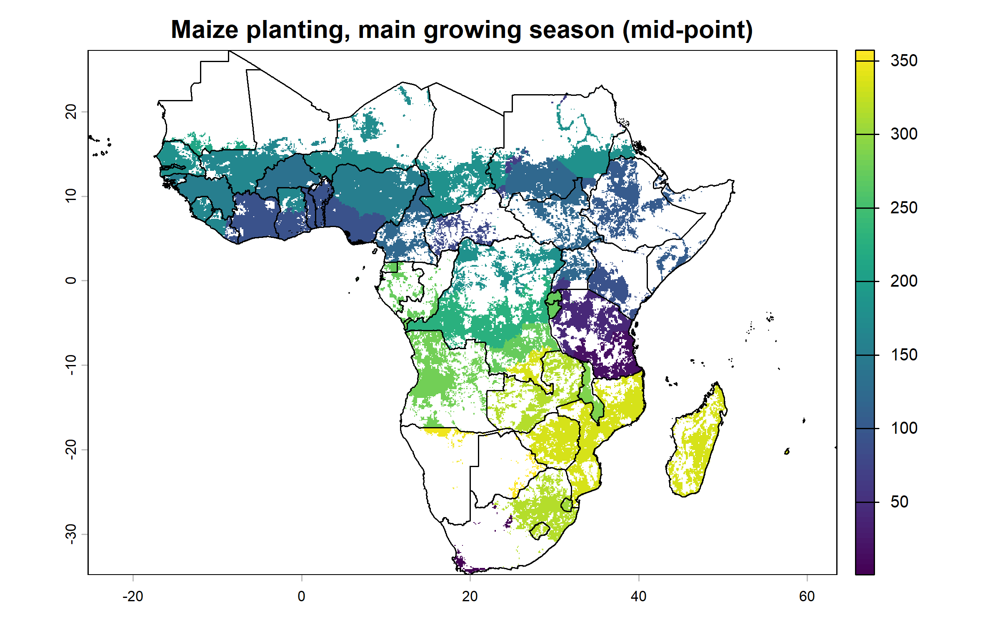
plot(maize_main[[5]], main = "Maize harvesting, main growing season (mid-point)")
plot(ssa, add = T)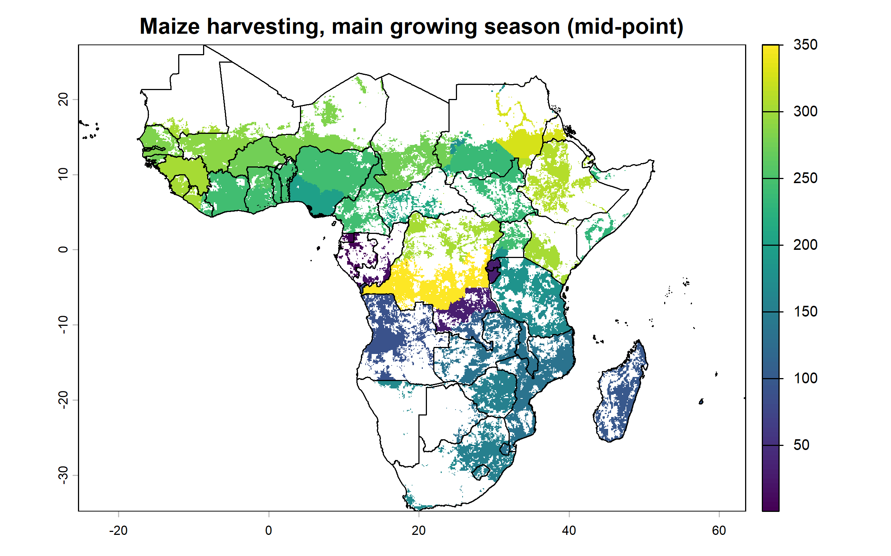
maize_second = crop_calendar_sacks(crop = "Maize (2nd season)", path = path)
maize_second = crop(maize_second, cropmask)
maize_second = mask(maize_second, cropmask)
plot(maize_second[[2]], main = "Maize planting, second growing season (mid-point)")
plot(ssa, add = T)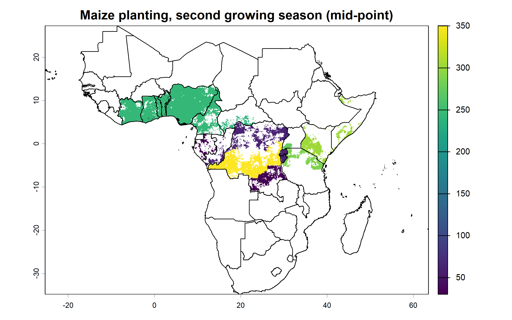
plot(maize_second[[5]], main = "Maize harvesting, second growing season (mid-point)")
plot(ssa, add = T)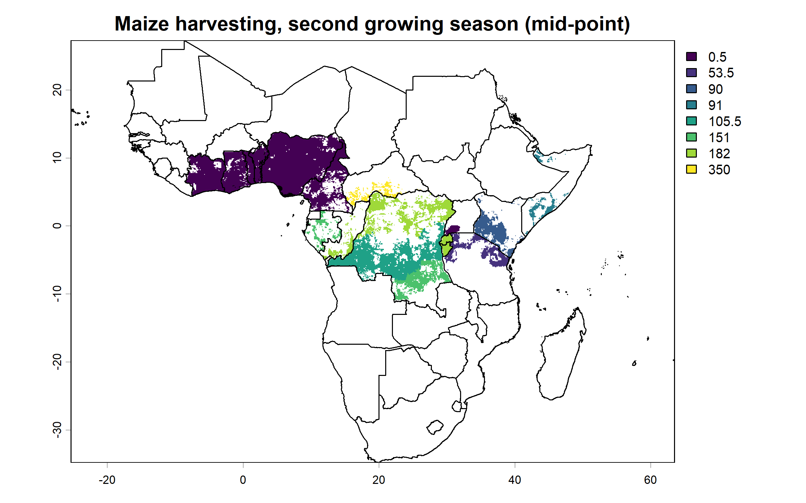
sorghum_main = crop_calendar_sacks(crop = "Sorghum (main season)", path = path)
sorghum_main = crop(sorghum_main, cropmask)
sorghum_main = mask(sorghum_main, cropmask)
plot(sorghum_main[[2]], main = "Sorghum planting, main growing season (mid-point)")
plot(ssa, add = T)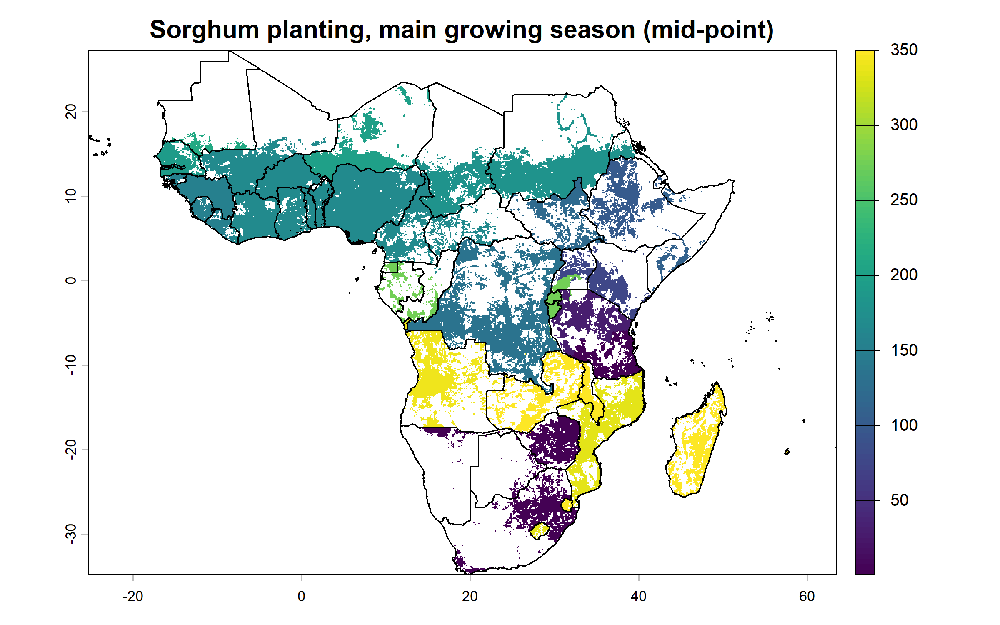
plot(sorghum_main[[5]], main = "Sorghum harvesting, main growing season (mid-point)")
plot(ssa, add = T)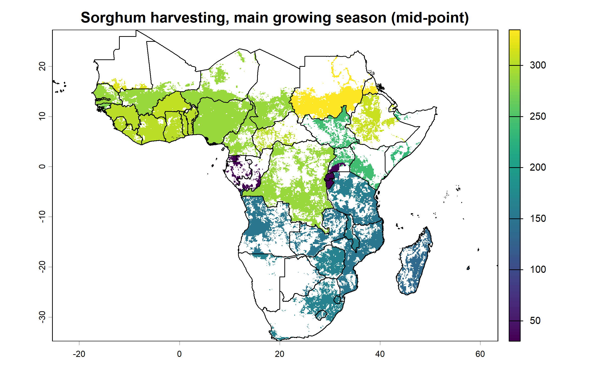
sorghum_second = crop_calendar_sacks(crop = "Sorghum (2nd season)", path = path)
sorghum_second = crop(sorghum_second, cropmask)
sorghum_second = mask(sorghum_second, cropmask)
plot(sorghum_second[[2]], main = "Sorghum planting, second growing season (mid-point)")
plot(ssa, add = T)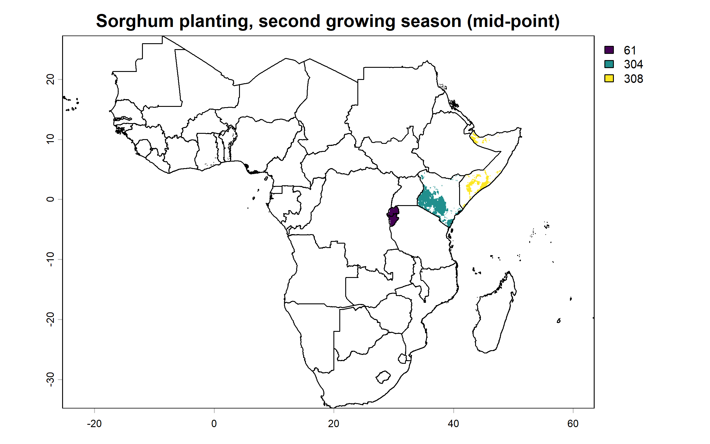
plot(sorghum_second[[5]], main = "Sorghum harvesting, second growing season (mid-point)")
plot(ssa, add = T)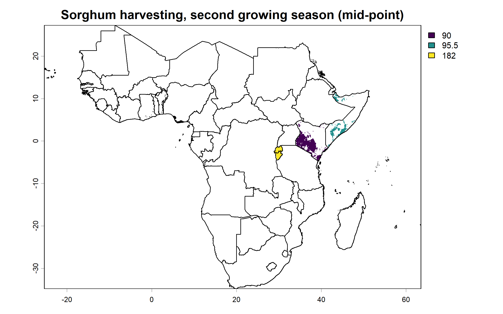
We then calculate the mean temperature during the main growing season of maize, considering months whose midpoint falls within the growing season. We mask cells outside the cropland mask.
maize_main_plant = maize_main[["plant"]]
maize_main_harvest = maize_main[["harvest"]]
maize_main_valid = ifel(!is.na(maize_main_plant) & !is.na(maize_main_harvest), 1,
NA)
# Identify months whose midpoint falls within the growing period. The second
# condition accounts for growing seasons crossing December-January.
maize_main_tjan = ifel((maize_main_plant <= 15 & maize_main_harvest >= 15) | (maize_main_harvest <
maize_main_plant & (maize_main_plant <= 15 | maize_main_harvest >= 15)), tavg[[1]],
NA)
maize_main_tfeb = ifel((maize_main_plant <= 45 & maize_main_harvest >= 45) | (maize_main_harvest <
maize_main_plant & (maize_main_plant <= 45 | maize_main_harvest >= 45)), tavg[[2]],
NA)
maize_main_tmar = ifel((maize_main_plant <= 74 & maize_main_harvest >= 74) | (maize_main_harvest <
maize_main_plant & (maize_main_plant <= 74 | maize_main_harvest >= 74)), tavg[[3]],
NA)
maize_main_tapr = ifel((maize_main_plant <= 105 & maize_main_harvest >= 105) | (maize_main_harvest <
maize_main_plant & (maize_main_plant <= 105 | maize_main_harvest >= 105)), tavg[[4]],
NA)
maize_main_tmay = ifel((maize_main_plant <= 135 & maize_main_harvest >= 135) | (maize_main_harvest <
maize_main_plant & (maize_main_plant <= 135 | maize_main_harvest >= 135)), tavg[[5]],
NA)
maize_main_tjun = ifel((maize_main_plant <= 166 & maize_main_harvest >= 166) | (maize_main_harvest <
maize_main_plant & (maize_main_plant <= 166 | maize_main_harvest >= 166)), tavg[[6]],
NA)
maize_main_tjul = ifel((maize_main_plant <= 196 & maize_main_harvest >= 196) | (maize_main_harvest <
maize_main_plant & (maize_main_plant <= 196 | maize_main_harvest >= 196)), tavg[[7]],
NA)
maize_main_taug = ifel((maize_main_plant <= 227 & maize_main_harvest >= 227) | (maize_main_harvest <
maize_main_plant & (maize_main_plant <= 227 | maize_main_harvest >= 227)), tavg[[8]],
NA)
maize_main_tsep = ifel((maize_main_plant <= 258 & maize_main_harvest >= 258) | (maize_main_harvest <
maize_main_plant & (maize_main_plant <= 258 | maize_main_harvest >= 258)), tavg[[9]],
NA)
maize_main_toct = ifel((maize_main_plant <= 288 & maize_main_harvest >= 288) | (maize_main_harvest <
maize_main_plant & (maize_main_plant <= 288 | maize_main_harvest >= 288)), tavg[[10]],
NA)
maize_main_tnov = ifel((maize_main_plant <= 319 & maize_main_harvest >= 319) | (maize_main_harvest <
maize_main_plant & (maize_main_plant <= 319 | maize_main_harvest >= 319)), tavg[[11]],
NA)
maize_main_tdec = ifel((maize_main_plant <= 349 & maize_main_harvest >= 349) | (maize_main_harvest <
maize_main_plant & (maize_main_plant <= 349 | maize_main_harvest >= 349)), tavg[[12]],
NA)
# Mean Tmean during maize main growing season Because `na.rm = TRUE` is used,
# months outside the growing period are ignored
maize_main_tmean = app(c(maize_main_tjan, maize_main_tfeb, maize_main_tmar, maize_main_tapr,
maize_main_tmay, maize_main_tjun, maize_main_tjul, maize_main_taug, maize_main_tsep,
maize_main_toct, maize_main_tnov, maize_main_tdec), mean, na.rm = TRUE)
maize_main_tmean = mask(maize_main_tmean, maize_main_valid)
names(maize_main_tmean) = "maize_main_tmean"
plot(maize_main_tmean, main = "Mean teamperature during the main growing season of maize")
plot(ssa, add = T)The same procedure is applied to the second maize season.
maize_second_plant = maize_second[["plant"]]
maize_second_harvest = maize_second[["harvest"]]
maize_second_valid = ifel(!is.na(maize_second_plant) & !is.na(maize_second_harvest),
1, NA)
maize_second_tjan = ifel((maize_second_plant <= 15 & maize_second_harvest >= 15) |
(maize_second_harvest < maize_second_plant & (maize_second_plant <= 15 | maize_second_harvest >=
15)), tavg[[1]], NA)
maize_second_tfeb = ifel((maize_second_plant <= 45 & maize_second_harvest >= 45) |
(maize_second_harvest < maize_second_plant & (maize_second_plant <= 45 | maize_second_harvest >=
45)), tavg[[2]], NA)
maize_second_tmar = ifel((maize_second_plant <= 74 & maize_second_harvest >= 74) |
(maize_second_harvest < maize_second_plant & (maize_second_plant <= 74 | maize_second_harvest >=
74)), tavg[[3]], NA)
maize_second_tapr = ifel((maize_second_plant <= 105 & maize_second_harvest >= 105) |
(maize_second_harvest < maize_second_plant & (maize_second_plant <= 105 | maize_second_harvest >=
105)), tavg[[4]], NA)
maize_second_tmay = ifel((maize_second_plant <= 135 & maize_second_harvest >= 135) |
(maize_second_harvest < maize_second_plant & (maize_second_plant <= 135 | maize_second_harvest >=
135)), tavg[[5]], NA)
maize_second_tjun = ifel((maize_second_plant <= 166 & maize_second_harvest >= 166) |
(maize_second_harvest < maize_second_plant & (maize_second_plant <= 166 | maize_second_harvest >=
166)), tavg[[6]], NA)
maize_second_tjul = ifel((maize_second_plant <= 196 & maize_second_harvest >= 196) |
(maize_second_harvest < maize_second_plant & (maize_second_plant <= 196 | maize_second_harvest >=
196)), tavg[[7]], NA)
maize_second_taug = ifel((maize_second_plant <= 227 & maize_second_harvest >= 227) |
(maize_second_harvest < maize_second_plant & (maize_second_plant <= 227 | maize_second_harvest >=
227)), tavg[[8]], NA)
maize_second_tsep = ifel((maize_second_plant <= 258 & maize_second_harvest >= 258) |
(maize_second_harvest < maize_second_plant & (maize_second_plant <= 258 | maize_second_harvest >=
258)), tavg[[9]], NA)
maize_second_toct = ifel((maize_second_plant <= 288 & maize_second_harvest >= 288) |
(maize_second_harvest < maize_second_plant & (maize_second_plant <= 288 | maize_second_harvest >=
288)), tavg[[10]], NA)
maize_second_tnov = ifel((maize_second_plant <= 319 & maize_second_harvest >= 319) |
(maize_second_harvest < maize_second_plant & (maize_second_plant <= 319 | maize_second_harvest >=
319)), tavg[[11]], NA)
maize_second_tdec = ifel((maize_second_plant <= 349 & maize_second_harvest >= 349) |
(maize_second_harvest < maize_second_plant & (maize_second_plant <= 349 | maize_second_harvest >=
349)), tavg[[12]], NA)
maize_second_tmean = app(c(maize_second_tjan, maize_second_tfeb, maize_second_tmar,
maize_second_tapr, maize_second_tmay, maize_second_tjun, maize_second_tjul, maize_second_taug,
maize_second_tsep, maize_second_toct, maize_second_tnov, maize_second_tdec),
mean, na.rm = TRUE)
maize_second_tmean = mask(maize_second_tmean, maize_second_valid)
plot(maize_second_tmean, main = "Mean teamperature during the second growing season of maize")
plot(ssa, add = T)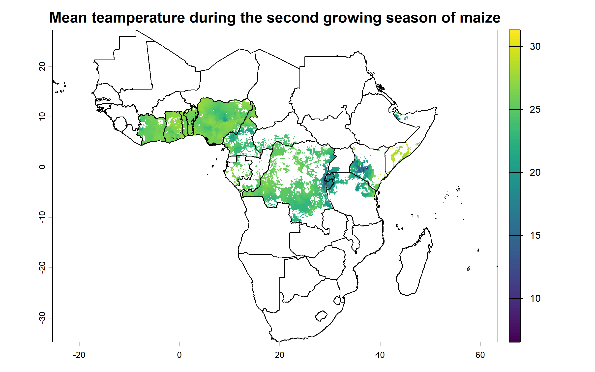
The procedure is repeated for sorghum, using its own main- and second-season crop calendars. The monthly inclusion logic is identical; only the crop-calendar layers differ.
sorghum_main_plant = sorghum_main[["plant"]]
sorghum_main_harvest = sorghum_main[["harvest"]]
sorghum_main_valid = ifel(!is.na(sorghum_main_plant) & !is.na(sorghum_main_harvest),
1, NA)
sorghum_main_tjan = ifel((sorghum_main_plant <= 15 & sorghum_main_harvest >= 15) |
(sorghum_main_harvest < sorghum_main_plant & (sorghum_main_plant <= 15 | sorghum_main_harvest >=
15)), tavg[[1]], NA)
sorghum_main_tfeb = ifel((sorghum_main_plant <= 45 & sorghum_main_harvest >= 45) |
(sorghum_main_harvest < sorghum_main_plant & (sorghum_main_plant <= 45 | sorghum_main_harvest >=
45)), tavg[[2]], NA)
sorghum_main_tmar = ifel((sorghum_main_plant <= 74 & sorghum_main_harvest >= 74) |
(sorghum_main_harvest < sorghum_main_plant & (sorghum_main_plant <= 74 | sorghum_main_harvest >=
74)), tavg[[3]], NA)
sorghum_main_tapr = ifel((sorghum_main_plant <= 105 & sorghum_main_harvest >= 105) |
(sorghum_main_harvest < sorghum_main_plant & (sorghum_main_plant <= 105 | sorghum_main_harvest >=
105)), tavg[[4]], NA)
sorghum_main_tmay = ifel((sorghum_main_plant <= 135 & sorghum_main_harvest >= 135) |
(sorghum_main_harvest < sorghum_main_plant & (sorghum_main_plant <= 135 | sorghum_main_harvest >=
135)), tavg[[5]], NA)
sorghum_main_tjun = ifel((sorghum_main_plant <= 166 & sorghum_main_harvest >= 166) |
(sorghum_main_harvest < sorghum_main_plant & (sorghum_main_plant <= 166 | sorghum_main_harvest >=
166)), tavg[[6]], NA)
sorghum_main_tjul = ifel((sorghum_main_plant <= 196 & sorghum_main_harvest >= 196) |
(sorghum_main_harvest < sorghum_main_plant & (sorghum_main_plant <= 196 | sorghum_main_harvest >=
196)), tavg[[7]], NA)
sorghum_main_taug = ifel((sorghum_main_plant <= 227 & sorghum_main_harvest >= 227) |
(sorghum_main_harvest < sorghum_main_plant & (sorghum_main_plant <= 227 | sorghum_main_harvest >=
227)), tavg[[8]], NA)
sorghum_main_tsep = ifel((sorghum_main_plant <= 258 & sorghum_main_harvest >= 258) |
(sorghum_main_harvest < sorghum_main_plant & (sorghum_main_plant <= 258 | sorghum_main_harvest >=
258)), tavg[[9]], NA)
sorghum_main_toct = ifel((sorghum_main_plant <= 288 & sorghum_main_harvest >= 288) |
(sorghum_main_harvest < sorghum_main_plant & (sorghum_main_plant <= 288 | sorghum_main_harvest >=
288)), tavg[[10]], NA)
sorghum_main_tnov = ifel((sorghum_main_plant <= 319 & sorghum_main_harvest >= 319) |
(sorghum_main_harvest < sorghum_main_plant & (sorghum_main_plant <= 319 | sorghum_main_harvest >=
319)), tavg[[11]], NA)
sorghum_main_tdec = ifel((sorghum_main_plant <= 349 & sorghum_main_harvest >= 349) |
(sorghum_main_harvest < sorghum_main_plant & (sorghum_main_plant <= 349 | sorghum_main_harvest >=
349)), tavg[[12]], NA)
sorghum_main_tmean = app(c(sorghum_main_tjan, sorghum_main_tfeb, sorghum_main_tmar,
sorghum_main_tapr, sorghum_main_tmay, sorghum_main_tjun, sorghum_main_tjul, sorghum_main_taug,
sorghum_main_tsep, sorghum_main_toct, sorghum_main_tnov, sorghum_main_tdec),
mean, na.rm = TRUE)
sorghum_main_tmean = mask(sorghum_main_tmean, sorghum_main_valid)
plot(sorghum_main_tmean, main = "Mean teamperature during the main growing season of sorghum")
plot(ssa, add = T)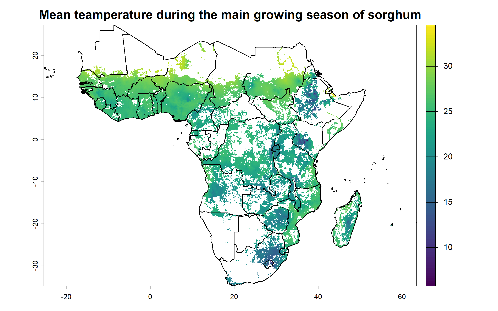
sorghum_second_plant = sorghum_second[["plant"]]
sorghum_second_harvest = sorghum_second[["harvest"]]
sorghum_second_valid = ifel(!is.na(sorghum_second_plant) & !is.na(sorghum_second_harvest),
1, NA)
sorghum_second_tjan = ifel((sorghum_second_plant <= 15 & sorghum_second_harvest >=
15) | (sorghum_second_harvest < sorghum_second_plant & (sorghum_second_plant <=
15 | sorghum_second_harvest >= 15)), tavg[[1]], NA)
sorghum_second_tfeb = ifel((sorghum_second_plant <= 45 & sorghum_second_harvest >=
45) | (sorghum_second_harvest < sorghum_second_plant & (sorghum_second_plant <=
45 | sorghum_second_harvest >= 45)), tavg[[2]], NA)
sorghum_second_tmar = ifel((sorghum_second_plant <= 74 & sorghum_second_harvest >=
74) | (sorghum_second_harvest < sorghum_second_plant & (sorghum_second_plant <=
74 | sorghum_second_harvest >= 74)), tavg[[3]], NA)
sorghum_second_tapr = ifel((sorghum_second_plant <= 105 & sorghum_second_harvest >=
105) | (sorghum_second_harvest < sorghum_second_plant & (sorghum_second_plant <=
105 | sorghum_second_harvest >= 105)), tavg[[4]], NA)
sorghum_second_tmay = ifel((sorghum_second_plant <= 135 & sorghum_second_harvest >=
135) | (sorghum_second_harvest < sorghum_second_plant & (sorghum_second_plant <=
135 | sorghum_second_harvest >= 135)), tavg[[5]], NA)
sorghum_second_tjun = ifel((sorghum_second_plant <= 166 & sorghum_second_harvest >=
166) | (sorghum_second_harvest < sorghum_second_plant & (sorghum_second_plant <=
166 | sorghum_second_harvest >= 166)), tavg[[6]], NA)
sorghum_second_tjul = ifel((sorghum_second_plant <= 196 & sorghum_second_harvest >=
196) | (sorghum_second_harvest < sorghum_second_plant & (sorghum_second_plant <=
196 | sorghum_second_harvest >= 196)), tavg[[7]], NA)
sorghum_second_taug = ifel((sorghum_second_plant <= 227 & sorghum_second_harvest >=
227) | (sorghum_second_harvest < sorghum_second_plant & (sorghum_second_plant <=
227 | sorghum_second_harvest >= 227)), tavg[[8]], NA)
sorghum_second_tsep = ifel((sorghum_second_plant <= 258 & sorghum_second_harvest >=
258) | (sorghum_second_harvest < sorghum_second_plant & (sorghum_second_plant <=
258 | sorghum_second_harvest >= 258)), tavg[[9]], NA)
sorghum_second_toct = ifel((sorghum_second_plant <= 288 & sorghum_second_harvest >=
288) | (sorghum_second_harvest < sorghum_second_plant & (sorghum_second_plant <=
288 | sorghum_second_harvest >= 288)), tavg[[10]], NA)
sorghum_second_tnov = ifel((sorghum_second_plant <= 319 & sorghum_second_harvest >=
319) | (sorghum_second_harvest < sorghum_second_plant & (sorghum_second_plant <=
319 | sorghum_second_harvest >= 319)), tavg[[11]], NA)
sorghum_second_tdec = ifel((sorghum_second_plant <= 349 & sorghum_second_harvest >=
349) | (sorghum_second_harvest < sorghum_second_plant & (sorghum_second_plant <=
349 | sorghum_second_harvest >= 349)), tavg[[12]], NA)
sorghum_second_tmean = app(c(sorghum_second_tjan, sorghum_second_tfeb, sorghum_second_tmar,
sorghum_second_tapr, sorghum_second_tmay, sorghum_second_tjun, sorghum_second_tjul,
sorghum_second_taug, sorghum_second_tsep, sorghum_second_toct, sorghum_second_tnov,
sorghum_second_tdec), mean, na.rm = TRUE)
sorghum_second_tmean = mask(sorghum_second_tmean, sorghum_second_valid)
names(sorghum_second_tmean) = "sorghum_second_tmean"
plot(sorghum_second_tmean, main = "Mean teamperature during the second growing season of sorghum")
plot(ssa, add = T)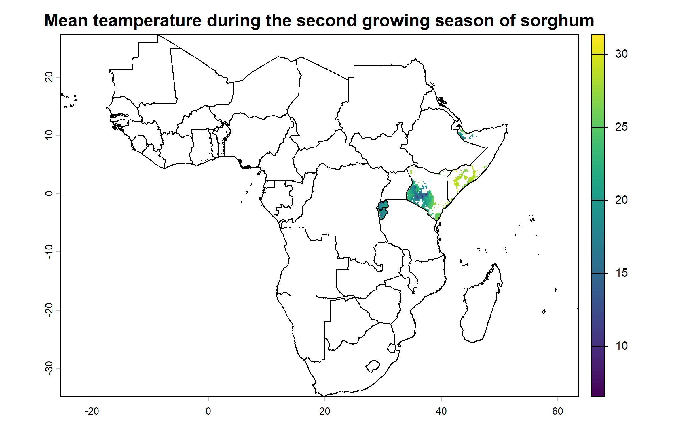
12.3 Fuzzy suitability functions
12.3.1 Temperature suitability
Temperature suitability is calculated separately for each crop and season. The trapezoidal membership function has four thresholds:
- the lower absolute limit, below which suitability is 0;
- the lower optimum limit, above which suitability increases to 1;
- the upper optimum limit, within which suitability remains 1;
- the upper absolute limit, beyond which suitability decreases to 0.
Between the absolute and optimum limits, membership changes linearly. Thus, the fuzzy score is not a probability; it is a normalized representation of how closely a temperature value matches the specified suitability range.
The thresholds used here are:
| Crop | Absolute range (°C) | Optimum range (°C) |
|---|---|---|
| Maize | 10–47 | 18–33 |
| Sorghum | 8–40 | 22–35 |
These values are the parameters adopted in this exercise from the crop-requirement information used to configure the script. Their suitability should be checked against the intended crop types and production environments before using the maps for decision-making.
maize_main_temp_fuzzy = ifel(maize_main_tmean <= 10, 0, ifel(maize_main_tmean < 18,
(maize_main_tmean - 10)/(18 - 10), ifel(maize_main_tmean <= 33, 1, ifel(maize_main_tmean <
47, (47 - maize_main_tmean)/(47 - 33), 0))))
maize_second_temp_fuzzy = ifel(maize_second_tmean <= 10, 0, ifel(maize_second_tmean <
18, (maize_second_tmean - 10)/(18 - 10), ifel(maize_second_tmean <= 33, 1, ifel(maize_second_tmean <
47, (47 - maize_second_tmean)/(47 - 33), 0))))
sorghum_main_temp_fuzzy = ifel(sorghum_main_tmean <= 8, 0, ifel(sorghum_main_tmean <
22, (sorghum_main_tmean - 8)/(22 - 8), ifel(sorghum_main_tmean <= 35, 1, ifel(sorghum_main_tmean <
40, (40 - sorghum_main_tmean)/(40 - 35), 0))))
sorghum_second_temp_fuzzy = ifel(sorghum_second_tmean <= 8, 0, ifel(sorghum_second_tmean <
22, (sorghum_second_tmean - 8)/(22 - 8), ifel(sorghum_second_tmean <= 35, 1,
ifel(sorghum_second_tmean < 40, (40 - sorghum_second_tmean)/(40 - 35), 0))))
# Plot trapezoidal temperature suitability functions
temp = seq(0, 50, by = 0.1)
par(mfrow = c(1, 2), mar = c(4, 4, 3, 1))
# Maize
maize_fuzzy = pmax(0, pmin(1, (temp - 10)/(18 - 10), (47 - temp)/(47 - 33)))
plot(temp, maize_fuzzy, type = "l", lwd = 2, col = "tomato", xlim = c(0, 50), ylim = c(0,
1), xlab = "Mean temperature (°C)", ylab = "Suitability", main = "Maize")
abline(v = c(10, 18, 33, 47), lty = c(2, 3, 3, 2), col = "grey50")
# Sorghum
sorghum_fuzzy = pmax(0, pmin(1, (temp - 8)/(22 - 8), (40 - temp)/(40 - 35)))
plot(temp, sorghum_fuzzy, type = "l", lwd = 2, col = "tomato", xlim = c(0, 50), ylim = c(0,
1), xlab = "Mean temperature (°C)", ylab = "Suitability", main = "Sorghum")
abline(v = c(8, 22, 35, 40), lty = c(2, 3, 3, 2), col = "grey50")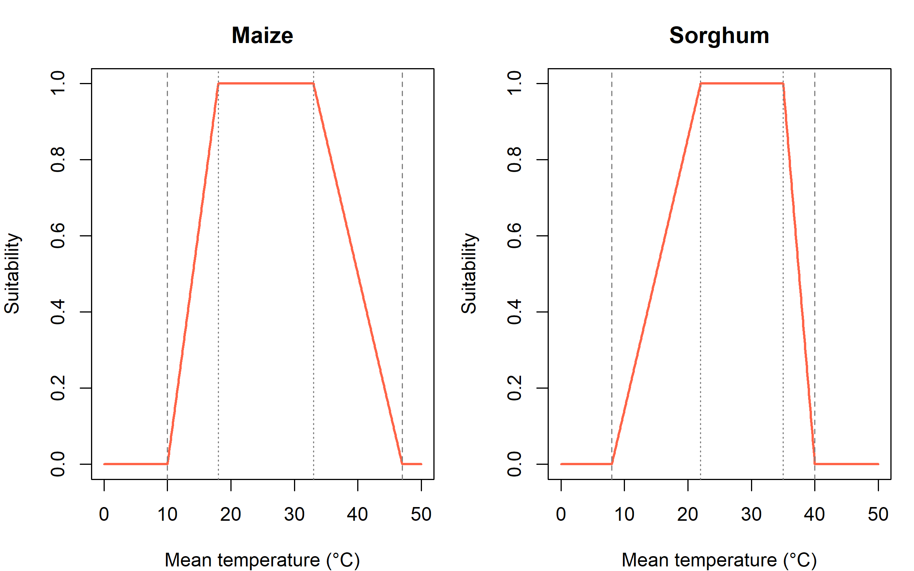
par(mfrow = c(1, 1))12.3.2 Precipitation suitability
Rainfall suitability is based on annual precipitation. The thresholds are:
| Crop | Absolute range (mm/year) | Optimum range (mm/year) |
|---|---|---|
| Maize | 400–1,800 | 600–1,200 |
| Sorghum | 300–700 | 400–600 |
The same trapezoidal logic is used: suitability increases linearly from the lower absolute limit to the lower optimum limit, remains at 1 within the optimum range, and decreases linearly to 0 between the upper optimum and upper absolute limits.
Annual precipitation is a broad indicator. It does not account for the timing of rainfall, within-season dry spells, runoff, soil water-holding capacity or irrigation. These limitations are particularly relevant in semi-arid environments.
maize_rain_fuzzy = ifel(prec_annual <= 400, 0, ifel(prec_annual < 600, (prec_annual -
400)/(600 - 400), ifel(prec_annual <= 1200, 1, ifel(prec_annual < 1800, (1800 -
prec_annual)/(1800 - 1200), 0))))
sorghum_rain_fuzzy = ifel(prec_annual <= 300, 0, ifel(prec_annual < 400, (prec_annual -
300)/(400 - 300), ifel(prec_annual <= 600, 1, ifel(prec_annual < 700, (700 -
prec_annual)/(700 - 600), 0))))
# Plot trapezoidal rainfall suitability functions
prec = seq(0, 2000, by = 1)
par(mfrow = c(1, 2), mar = c(4, 4, 3, 1))
# Maize
maize_rain_curve = pmax(0, pmin(1, (prec - 400)/(600 - 400), (1800 - prec)/(1800 -
1200)))
plot(prec, maize_rain_curve, type = "l", lwd = 2, col = "tomato", xlim = c(0, 2000),
ylim = c(0, 1), xlab = "Annual precipitation (mm)", ylab = "Suitability", main = "Maize")
abline(v = c(400, 600, 1200, 1800), lty = c(2, 3, 3, 2), col = "grey50")
# Sorghum
sorghum_rain_curve = pmax(0, pmin(1, (prec - 300)/(400 - 300), (700 - prec)/(700 -
600)))
plot(prec, sorghum_rain_curve, type = "l", lwd = 2, col = "tomato", xlim = c(0, 2000),
ylim = c(0, 1), xlab = "Annual precipitation (mm)", ylab = "Suitability", main = "Sorghum")
abline(v = c(300, 400, 600, 700), lty = c(2, 3, 3, 2), col = "grey50")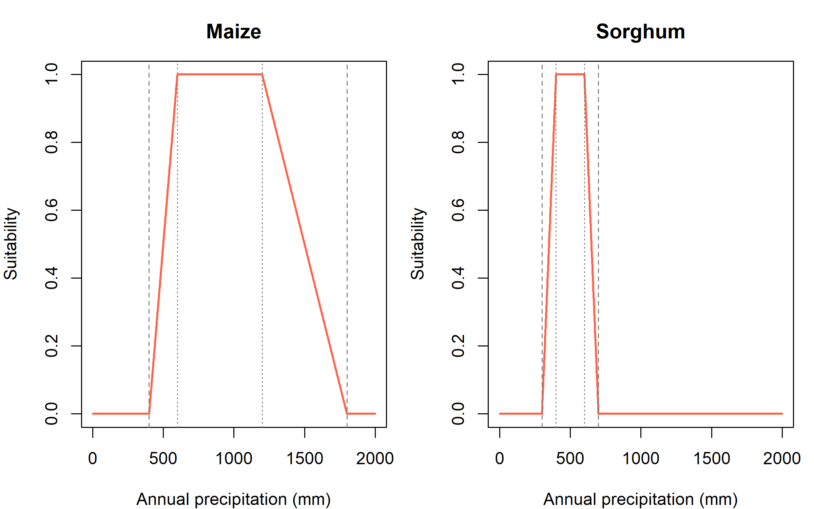
par(mfrow = c(1, 1))12.3.3 Soil pH suitability
The soil pH thresholds are:
| Crop | Absolute range | Optimum range |
|---|---|---|
| Maize | 4.5–8.5 | 5.0–7.0 |
| Sorghum | 5.0–8.0 | 5.5–7.5 |
As with temperature and precipitation, the membership score ranges from 0 to 1. The thresholds describe a simplified response to soil pH and do not represent the full range of soil constraints that may affect crop growth.
maize_ph_fuzzy = ifel(ph <= 4.5, 0, ifel(ph < 5, (ph - 4.5)/(5 - 4.5), ifel(ph <=
7, 1, ifel(ph < 8.5, (8.5 - ph)/(8.5 - 7), 0))))
sorghum_ph_fuzzy = ifel(ph <= 5, 0, ifel(ph < 5.5, (ph - 5)/(5.5 - 5), ifel(ph <=
7.5, 1, ifel(ph < 8, (8 - ph)/(8 - 7.5), 0))))
# Plot trapezoidal pH suitability functions
ph_values = seq(3, 10, by = 0.01)
par(mfrow = c(1, 2), mar = c(4, 4, 3, 1))
# Maize
maize_ph_curve = pmax(0, pmin(1, (ph_values - 4.5)/(5 - 4.5), (8.5 - ph_values)/(8.5 -
7)))
plot(ph_values, maize_ph_curve, type = "l", lwd = 2, col = "tomato", xlim = c(3,
10), ylim = c(0, 1), xlab = "Soil pH", ylab = "Suitability", main = "Maize")
abline(v = c(4.5, 5, 7, 8.5), lty = c(2, 3, 3, 2), col = "grey50")
# Sorghum
sorghum_ph_curve = pmax(0, pmin(1, (ph_values - 5)/(5.5 - 5), (8 - ph_values)/(8 -
7.5)))
plot(ph_values, sorghum_ph_curve, type = "l", lwd = 2, col = "tomato", xlim = c(3,
10), ylim = c(0, 1), xlab = "Soil pH", ylab = "Suitability", main = "Sorghum")
abline(v = c(5, 5.5, 7.5, 8), lty = c(2, 3, 3, 2), col = "grey50")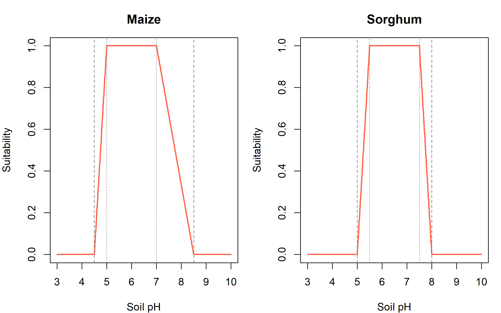
par(mfrow = c(1, 1))12.4 Combining suitability components
12.4.1 Maize
For each maize season, the three fuzzy scores—temperature, precipitation and soil pH—are combined using an equal-weight arithmetic mean. na.rm = FALSE is used so that a final score is produced only where all three components are available.
The seasonal validity mask is applied after aggregation. Finally, the main- and second-season suitability surfaces are combined. If both seasons are available, the higher score is retained. If only one season is available, its score is retained.
This maximum rule represents the most suitable of the mapped growing seasons. It does not imply that farmers necessarily cultivate both seasons, or that the highest-scoring season is the one actually used.
maize_main_suitability = app(c(maize_main_temp_fuzzy, maize_rain_fuzzy, maize_ph_fuzzy),
mean, na.rm = FALSE)
maize_second_suitability = app(c(maize_second_temp_fuzzy, maize_rain_fuzzy, maize_ph_fuzzy),
mean, na.rm = FALSE)
# Apply seasonal calendar masks
maize_main_suitability = mask(maize_main_suitability, maize_main_valid)
maize_second_suitability = mask(maize_second_suitability, maize_second_valid)
# Combine seasons: retain the maximum suitability across available seasons
maize_suitability_ssa = ifel(is.na(maize_main_suitability), maize_second_suitability,
ifel(is.na(maize_second_suitability), maize_main_suitability, ifel(maize_main_suitability >=
maize_second_suitability, maize_main_suitability, maize_second_suitability)))
names(maize_main_suitability) = "maize_main_suitability"
names(maize_second_suitability) = "maize_second_suitability"
names(maize_suitability_ssa) = "maize_suitability"ggplot() + geom_spatraster(data = maize_suitability_ssa) + geom_spatvector(data = ssa,
fill = NA, color = "black", linewidth = 0.3) + scale_fill_viridis_c(option = "inferno",
limits = c(0, 1), name = "Suitability", na.value = "transparent") + coord_sf() +
labs(title = "Maize eco-physiological suitability") + theme_bw() + theme(plot.title = element_text(size = 14,
face = "bold"), legend.position = "right", legend.title = element_text(size = 11),
legend.text = element_text(size = 10), axis.title = element_blank(), panel.background = element_rect(fill = "white",
color = NA), plot.background = element_rect(fill = "white", color = NA)) +
annotation_scale(location = "br", width_hint = 0.3) + annotation_north_arrow(location = "tl",
which_north = "true", style = north_arrow_fancy_orienteering())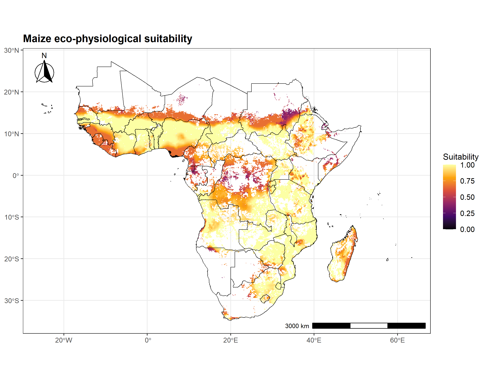
12.4.2 Sorghum
The same aggregation procedure is applied to sorghum, using its own temperature suitability layers and crop-specific precipitation and pH membership functions.
sorghum_main_suitability = app(c(sorghum_main_temp_fuzzy, sorghum_rain_fuzzy, sorghum_ph_fuzzy),
mean, na.rm = FALSE)
sorghum_second_suitability = app(c(sorghum_second_temp_fuzzy, sorghum_rain_fuzzy,
sorghum_ph_fuzzy), mean, na.rm = FALSE)
# Apply seasonal calendar masks
sorghum_main_suitability = mask(sorghum_main_suitability, sorghum_main_valid)
sorghum_second_suitability = mask(sorghum_second_suitability, sorghum_second_valid)
# Combine seasons
sorghum_suitability_ssa = ifel(is.na(sorghum_main_suitability), sorghum_second_suitability,
ifel(is.na(sorghum_second_suitability), sorghum_main_suitability, ifel(sorghum_main_suitability >=
sorghum_second_suitability, sorghum_main_suitability, sorghum_second_suitability)))
names(sorghum_main_suitability) = "sorghum_main_suitability"
names(sorghum_second_suitability) = "sorghum_second_suitability"
names(sorghum_suitability_ssa) = "sorghum_suitability"ggplot() + geom_spatraster(data = sorghum_suitability_ssa) + geom_spatvector(data = ssa,
fill = NA, color = "black", linewidth = 0.3) + scale_fill_viridis_c(option = "inferno",
limits = c(0, 1), name = "Suitability", na.value = "transparent") + coord_sf() +
labs(title = "Sorghum eco-physiological suitability") + theme_bw() + theme(plot.title = element_text(size = 14,
face = "bold"), legend.position = "right", legend.title = element_text(size = 11),
legend.text = element_text(size = 10), axis.title = element_blank(), panel.background = element_rect(fill = "white",
color = NA), plot.background = element_rect(fill = "white", color = NA)) +
annotation_scale(location = "br", width_hint = 0.3) + annotation_north_arrow(location = "tl",
which_north = "true", style = north_arrow_fancy_orienteering())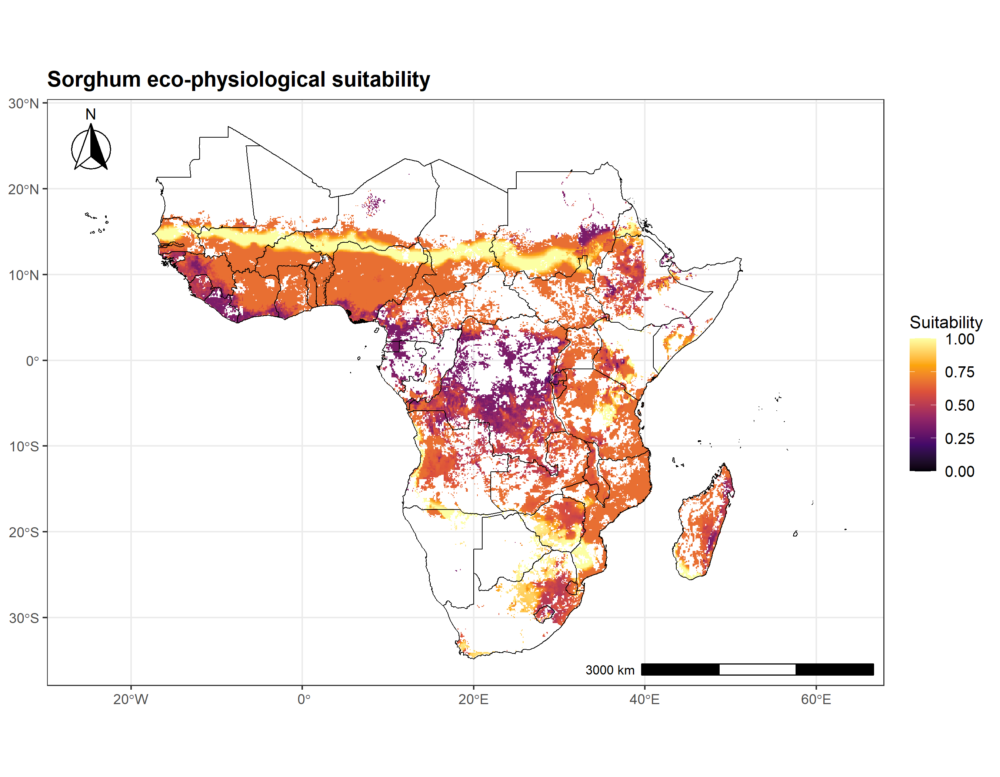